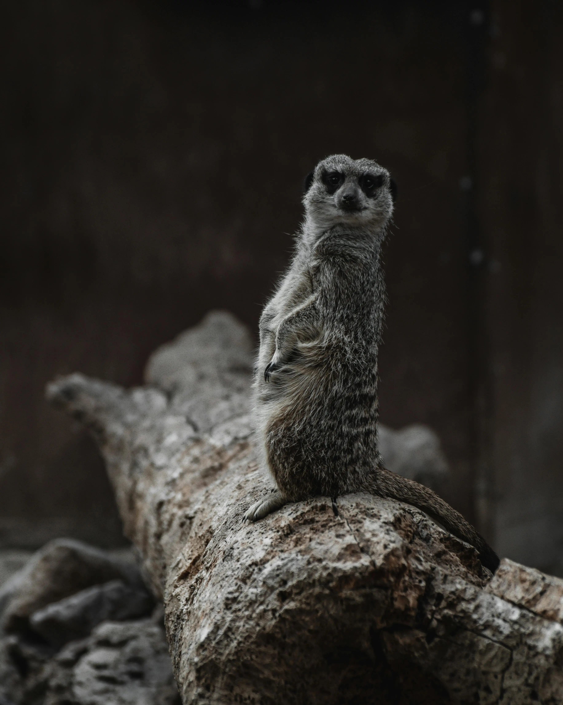
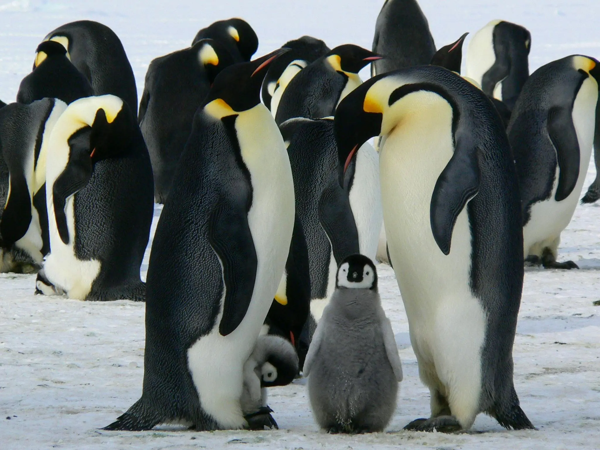
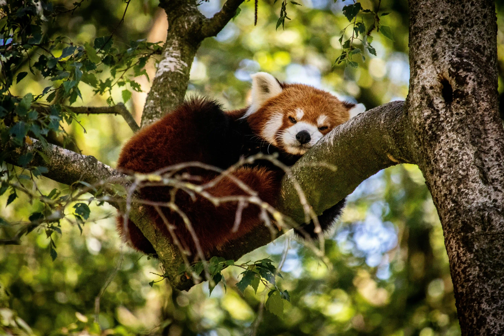
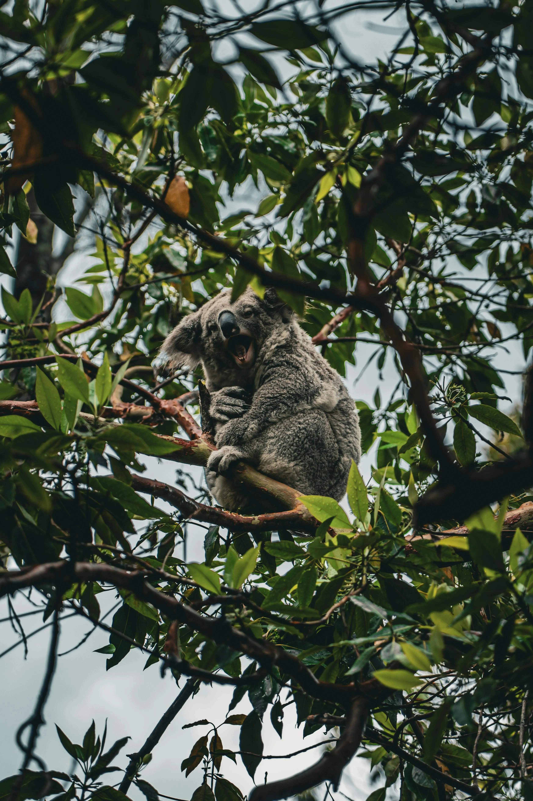
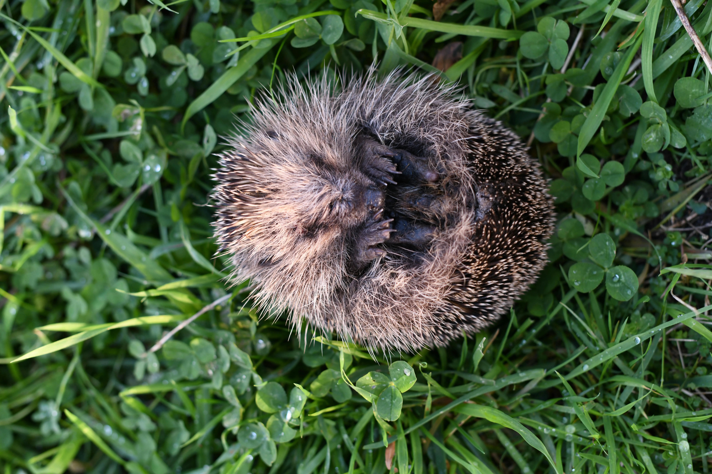
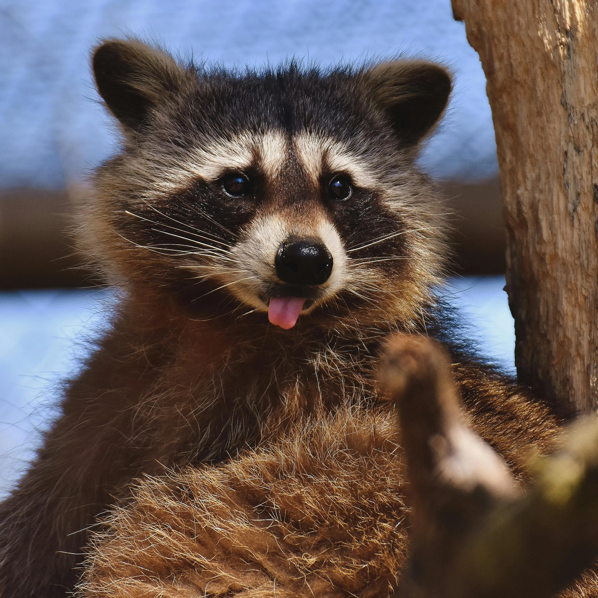
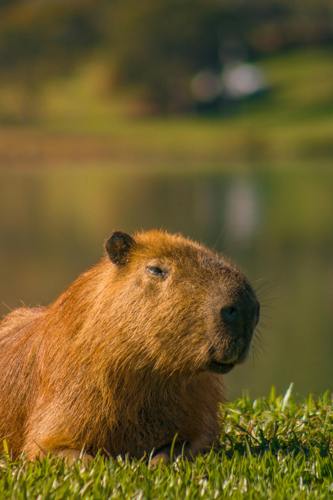

Africa - Meerkat

Meet the Meerkat, Africa’s most alert and social animal. These
little sentinels are known for their tight-knit family groups.
Captivating Detail: Meerkats have dark patches
around their eyes that reduce the glare of the sun, helping them
spot predators from afar.
Antarctic - Penguin

These Emperor Penguin chicks are braving the cold Antarctic climate
under the watchful eye of their parents.
Amazing Fact: Emperor Penguins are the only penguin
species that breed during the harsh Antarctic winter, with males
incubating the eggs for about 65 days in temperatures as low as
-60°C (-76°F).
Asia - Red Panda

The Red Panda, with its striking red fur and bushy tail, is a symbol
of beauty and tranquility in the forests of Asia.
Curious Fact: Red Pandas have a false thumb, which
is actually an extended wrist bone that helps them grasp bamboo
while feeding.
Australasia - Koala

This adorable Koala, an iconic symbol of Australia, enjoys a
peaceful moment in its eucalyptus home.
Intriguing Insight: Koalas sleep up to 18-22 hours
a day to conserve energy, as their diet of eucalyptus leaves
provides very little nutrition.
Europe - Hedgehog

This little Hedgehog, native to Europe, is a nocturnal creature
known for its spiky defense mechanism.
Noteworthy Fact: Hedgehogs can hibernate during the
winter, lowering their body temperature and heart rate to survive
the cold months.
North America - Raccoon

Raccoons are known for their intelligence and dexterous paws, often
seen exploring their surroundings.
Fascinating Tidbit: Raccoons can rotate their hind
feet 180 degrees, allowing them to climb down trees headfirst!
South America - Capybara

As the largest rodent in the world, the Capybara is surprisingly
gentle and social. Found in South America, these lovable animals are
often seen enjoying life near water.
Interesting Fact: Capybaras are excellent swimmers
and can hold their breath underwater for up to five minutes!